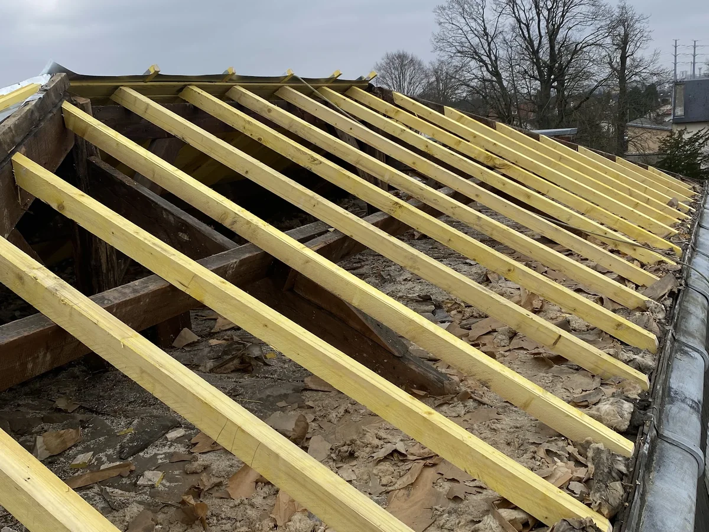
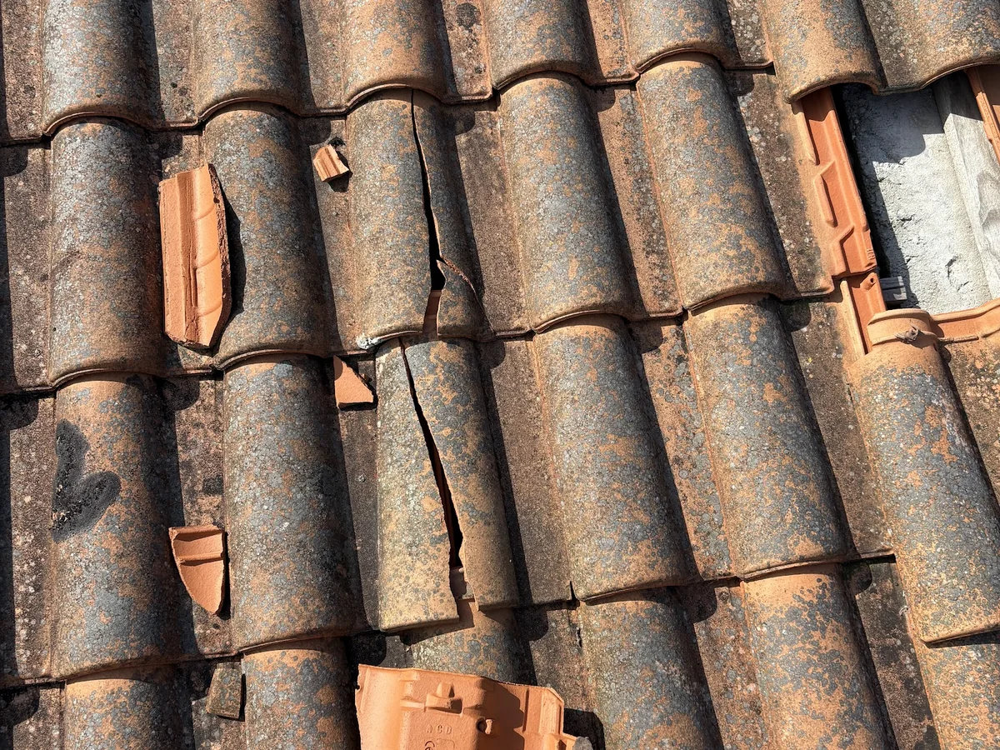
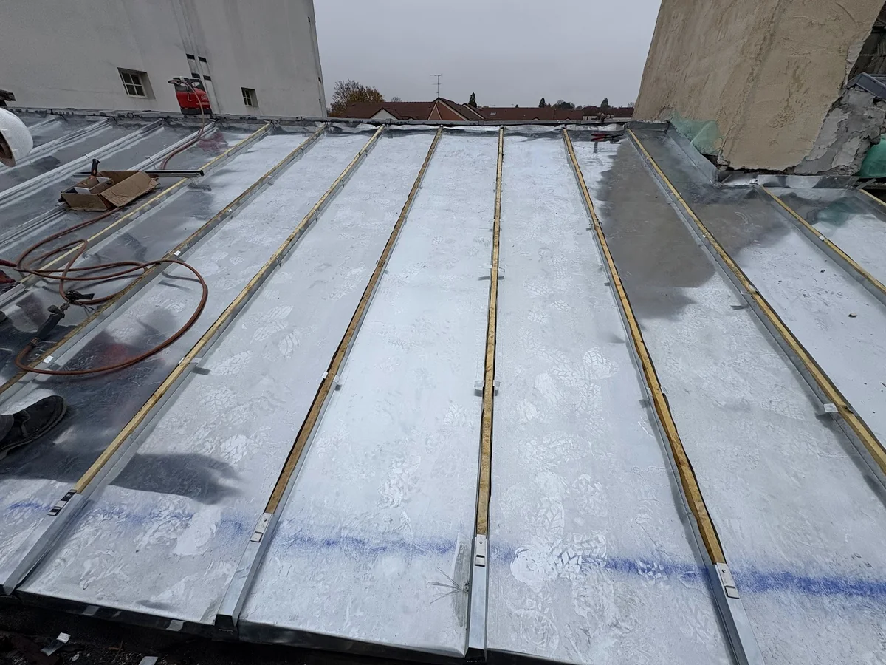
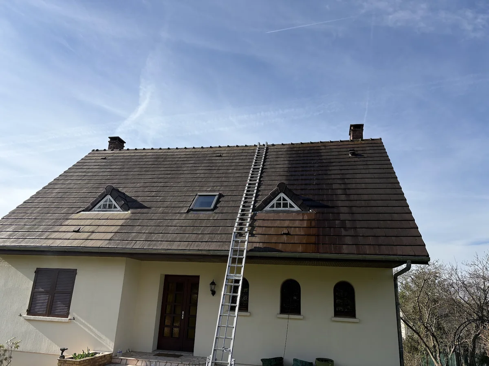

Du Bas-Bugey à la plaine de l'Ain : 16 communes où nous intervenons, et toutes celles autour.
Charli Couverture est installé à Ambérieu-en-Bugey, à la sortie de la cluse de l'Albarine. Cette position nous permet d'atteindre rapidement tout le secteur : la vallée de l'Albarine et le Bas-Bugey à l'est, Lagnieu et Saint-Vulbas au sud, Meximieux et Chazey-sur-Ain à l'ouest, Pont-d'Ain au nord.
Le bâti change d'une commune à l'autre : maisons en pierre et toits pentus du Bugey qui prennent la neige, maisons en galets roulés de la plaine, pavillons récents et bâtiments d'activité du parc industriel de la plaine de l'Ain en bac acier. Nous venons avec le matériel complet, échafaudage et poste à souder le zinc compris. Le déplacement pour le devis est gratuit.
Notre ville. Maisons de bourg, pavillons des quartiers récents et bâti ancien du centre : nous y intervenons en priorité, de jour comme de nuit en cas de fuite.
Commune voisine immédiate : réfections de toitures en tuile mécanique et reprises de zinguerie sur les maisons des années 70-80.
Lotissements et maisons individuelles : remplacement de gouttières, pose de Velux et démoussage des pans exposés au nord.
Autour de l'abbaye, du bâti ancien en pierre aux toitures à reprendre dans le respect de leur aspect d'origine.
Maisons de pente au pied du Bugey : couvertures exposées au vent et à la neige, fixations et faîtages renforcés.
Vallée de l'Albarine, humidité et mousses rapides : nettoyage, traitement hydrofuge et reprise des solins.
Bâti de bourg et maisons en pierre : réfection de couverture, noues et chéneaux en zinc refaits à neuf.
Maisons du village et bâtiments d'activité du parc de la plaine de l'Ain : couvertures en tuile comme en bac acier.
Maisons de ville et pavillons : rénovation complète de toiture, isolation et pose de fenêtres de toit.
Au bord de l'Ain : surveillance des descentes d'eau et des évacuations, premières responsables des infiltrations.
Village de caractère au pied des falaises : toitures anciennes restaurées avec des tuiles assorties.
Maisons vigneronnes et dépendances : remaniement de toiture, rives et faîtages repris.
Pavillons et maisons de la plaine : entretien de toiture, gouttières neuves et démoussage.
Commune voisine : petites réparations, tuiles cassées et fuites traitées sans délai.
Entrée de la vallée de l'Albarine : couvertures exposées, habillages zinc et abergements de cheminée.
Maisons en galets roulés de la plaine : réfection de couverture sur liteaux neufs et zinguerie complète.

Pose neuve et rénovation complète de votre toiture en tuile mécanique, tuile plate ou bac acier, charpente et liteaux compris.
Découvrir →
Recherche de fuite, mise hors d'eau et réparation durable : tuiles cassées, faîtage, solins, fenêtres de toit. Joignables 24h/24 du lundi au samedi.
Découvrir →
Gouttières, chéneaux, descentes, noues, abergements de cheminée et couvertures zinc à joint debout, façonnés sur mesure.
Découvrir →
Démoussage, nettoyage et traitement hydrofuge de toiture pour prolonger la vie de vos tuiles et éviter les infiltrations.
Découvrir →Laissez-nous vos coordonnées : Charli vous rappelle pour convenir d'une visite. Le déplacement et le devis sont gratuits, sans engagement.